画像にリンクがはってあるものは、クリックすると別窓で大きめサイズが表示されます。
[チェン ウォンソク]
所在地；コンロン中央やや左下 |
| 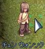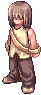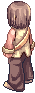 |
[サンファヨン]
所在地；コンロン中央やや左上 |
| 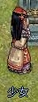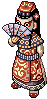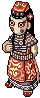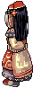 |
[ワグオ]
所在地；コンロンD前 |
| 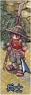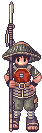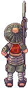 |
[門番]
所在地；コンロン村長の家（110,131）の前 |
| 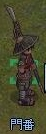 |
[サングファヨン]
所在地；コンロン村長の家1F |
| 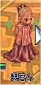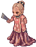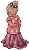 |
[サヨゥムン]
所在地；コンロン村長の家2F |
| 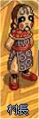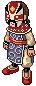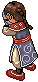 |
[マヨゥバン]
所在地；コンロン旅館1F |
| 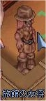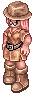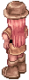 |
[ソルブン]
所在地；コンロン旅館1F |
| 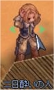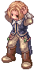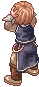 |
[サウンソ]
所在地；コンロン11時方向 |
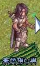 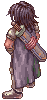 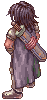 |
[ウンゲル]
所在地；ゲフェン宿屋奥 |
| 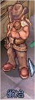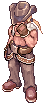 |
[リールー]
所在地；ゲフェン宿屋奥2F |
| 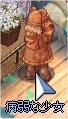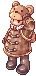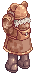 |
[ネル]
所在地；プロンテラ（275, 86） |
| 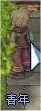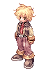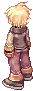 |
[ハイシャ]
所在地；ジュノー（208, 164） |
| 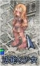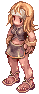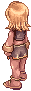 |
[シルネ]
所在地；ジュノー建物（244, 144）内 |
| 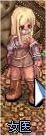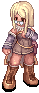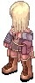 |
back
(c) Gravity Co., Ltd. & Lee MyoungJin(studio DTDS). All rights reserved.
(c) GungHo Online Entertainment, Inc. All Rights Reserved.
当コンテンツの再利用（再転載・配布など）は、禁止しています。